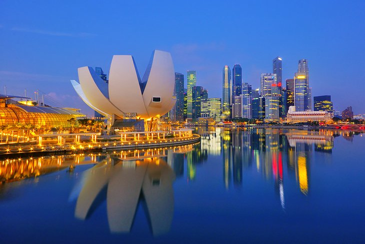

Tourist spots are popular destinations that attract travelers from around the world due to their unique attractions and remarkable features. These spots often include famous landmarks, natural wonders, historical sites, and cultural hotspots that offer visitors an opportunity to immerse themselves in the beauty and significance of a particular location. They serve as windows to the rich history, traditions, and natural splendor of a region, providing visitors with an unforgettable and enriching experience.
ASIA
1. MT. Fuji, Japan

- Although Mount Fuji is an active stratovolcano, it hasn't erupted since 1708. The stunning snowcapped mountain is one of Japan's "Three Holy Mountains," which are traditionally considered to hold a particular power-Mount Fuji has volcanic power. While many visitors come here to just photograph this World Heritage List Cultural Site and well-known symbol of Japan, others arrive for the climbing opportunities
2. Hong Kong

- Hong Kong also has the largest number of skyscrapers in the world at 355-an impressive 75 more than the city in second place, New York. A good number of these are located around Victoria Harbor, a popular tourist area with one of the most stunning coastal skylines in Asia. For the best views, visitors can climb to the top of Victoria Peak, HK's highest hill and home to a leisure and shopping complex with an enclosed viewing terrace looking over the city below.
3. Singapore
- Singapore only gained full independence from the UK and became a sovereign state in 1965, but this brand-new country is now a financial powerhouse and one of the most fun countries to visit in Southeast Asia. Because of its size and location, Singapore doesn't have a lot of beaches-unless you count the three beaches on Sentosa Island resort, small but with soft white sands and protected lagoons with clean blue waters-but it makes up for it with themed attractions, lush rain forests, and lively coastal fun.
Europe
1. Grand Canal in Venice, Italy
- There’re a variety of waterways to explore on an iconic gondola ride through Venice, but Grand Canal is the main thoroughfare of the city. Visitors will pass houses, eateries, and shops as they glide through this top travel destination. Plan your visit in February to witness the city’s Carnevale celebration in the days leading up to the Christian celebration of Lent. The Venetian streets are filled with partygoers in elaborate costumes and decorative masks wandering the city streets.
2. Big Ben in London, England
- Big Ben is technically a nickname for the Great Bell of this striking clock, but the name has been synonymous with the clock tower itself. This notable London landmark was officially named Clock Tower and later renamed Elizabeth Tower. Whichever name is used, there’s no denying it’s one of the most recognizable attractions in the world. Located on the north end of the Palace of Westminster, this monument is located nearby many of the city’s top sites.
3. Sagrada Familia in Barcelona, Spain
-No trip to Barcelona is complete without a visit to Sagrada Familia. Upon seeing the scaffolding, visitors could mistakenly believe it’s being refurbished, but in actuality, it has never been completed in its 150-year history. Work on this well-known church began in 1882 by Antonio Gaudi, but after facing a series of challenges, it was never able to be fully completed. Gaudi died in 1926 without ever seeing his work come to fruition, but the hope is to complete the church by 2026 to commemorate the centennial anniversary of Gaudi’s death.
America
1. Empire State Building, New York
- The Empire State Building is on par with the Eiffel Tower as one of the most recognizable and iconic buildings in the world. The 102-story building is the sixth-tallest skyscraper in the U.S., and each year, approximately 4 million tourists head up to the 86th- and 102nd-floor observation decks for stunning aerial views of New York City. Passersby can also watch the festive lights on the tower from below or from a distance. They change colors (from a palette of 16 million shades) for seasonal events, holidays, and cultural happenings.
2. Golden Gate Bridge, California
- This picturesque, red suspension bridge is an internationally recognized symbol of San Francisco. It connects the city with Marin County, California, over the Golden Gate strait. Travelers can drive, bike, or walk across. The best time to visit the Golden Gate Bridge is in September and October because the weather is comfortably warm. It's not suggested that people go in July and August because it's cold and windy.
3. Lincoln Memorial, Washington, D.C.
- The Lincoln Memorial is open 24/7. It was built to remember America's 16th president, Abraham Lincoln. It's right across from the Washington Monument on the west end of the National Mall in Washington, D.C. The Greek-inspired building has large, white columns on the outside with murals and a giant statue of Lincoln on the inside. On August 28, 1963, Martin Luther King Jr. delivered his "I Have a Dream" speech here.
GO TO:
Asia Europe America
References:
Asia
Asiahttps://www.planetware.com/asia/best-places-to-visit-in-asia-jpn-1-15Europe
https://www.worldatlas.com/articles/the-most-popular-tourist-attractions-in-all-of-europeAmerica
https://www.explore.com/1086610/the-75-most-popular-american-tourist-destinations